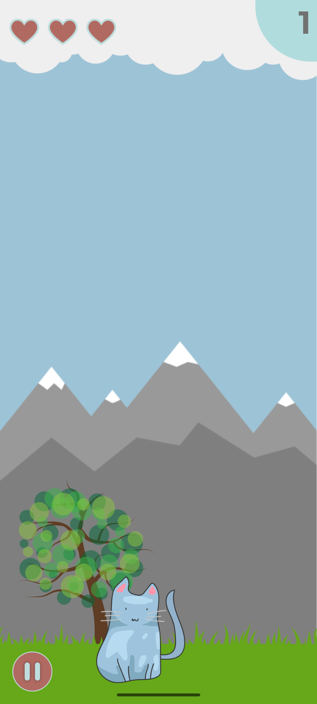

Comment jouer à Falling Kitten
Faites tourner les chatons qui tombent pour qu’ils atterrissent sur leurs pattes. Ce guide correspond à Falling Kitten 1.2 pour Android. Les boutons et les messages de l’application sont en anglais, même sur un appareil configuré en français.
Télécharger Falling Kitten sur Google Play
Votre première partie
- Commencez une partie. Le score démarre à 0 et vous avez trois cœurs.
- Touchez un chaton pendant sa chute pour le faire tourner. Chaque appui lui fait faire un quart de tour (90°).
- Un chaton qui atterrit sur ses pattes rapporte un point. Sinon, vous perdez un cœur.
- Continuez à faire tourner les chatons pendant leur chute. La partie se termine quand vous avez perdu les trois cœurs.

Après une partie
Le jeu affiche le score de la partie et votre meilleur score enregistré sur l’appareil. Touchez l’icône pour rejouer.
Falling Kitten fonctionne hors connexion et ne nécessite pas de compte. Ce n’est ni un animal de compagnie virtuel, ni un jeu destiné aux chats.